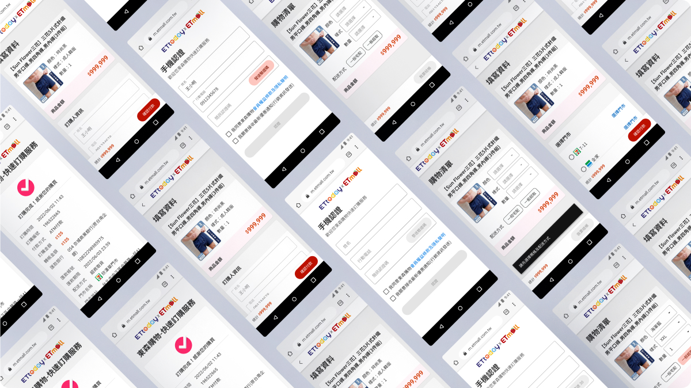
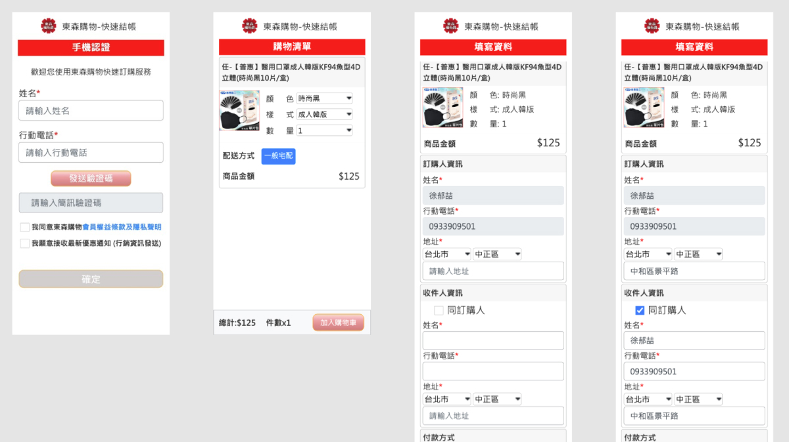
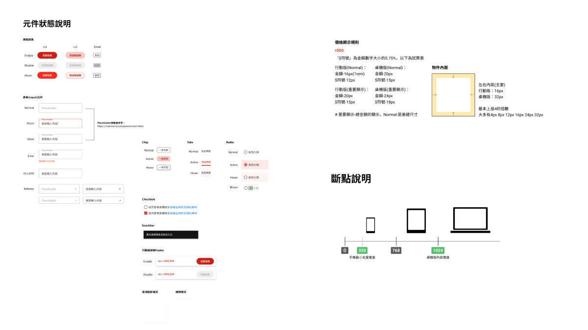
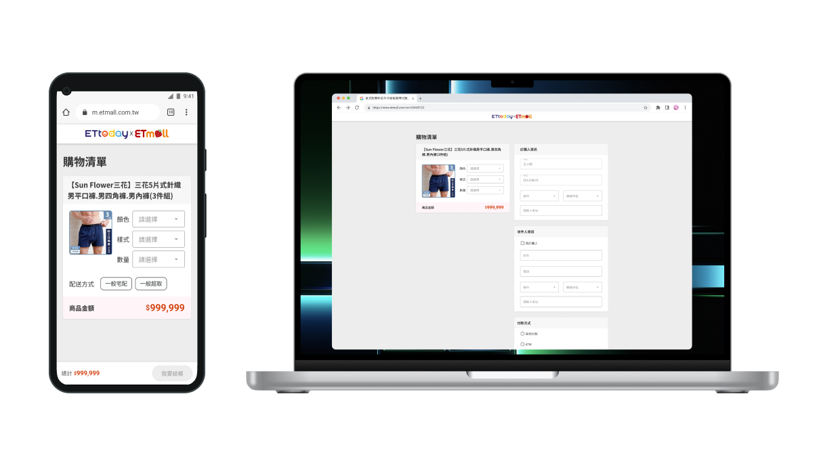

文末導購購物車樣式更新

專案簡介
新增及優化購物車頁面，讓使用者在當前網頁瀏覽的時候，可以直接在該頁面下進行購物結帳，不需要離開當前的畫面。
我的角色
因需求內容屬於較為明確，且功能基本上是以現有的頁面做調整，所以此次專案只負責UI設計的部分。
我在此專案做了
- 翻新舊購物車介面，定義各種介面狀態(失效、錯誤...等等)及回饋
- 定義及製作各平台裝置呈現樣貌
- 製作Mockup及原型，並與需求端確認操作流程
- 交付設計稿，並與工程師說明設計細節
想要達成的目標
我們要如何簡化操作流程，減少使用者使用者操作的困擾來降低跳出率？
- 項目背景 使用者在操作文章導購商品到站內購物的流程，因為操作繁瑣且跳出率較高，另外還有因介面樣式過於簡陋，導致使用者認為該頁面並非正式的購物車頁面。
- 解決方向 與需求、研發討論過後，一致決定先使用現有購物車來簡化流程，並且重新設計介面樣式，讓東森購物的介面元素融入該頁面中，以此來增加可信度與安心度，嘗試是否能達到減少跳出率。

原版畫面
設計
- 重新設計Logo、介面元件樣式
- 重新定義區塊資訊、文字階層、用色、螢幕斷點等等
- 增加部分系統回饋、簡化操作流程

設計元件

更新後頁面
結果
交接完所有設計稿之後，我也差不多離職了，無法獲得相關數據，但過程與研發和工程師之間的討論也讓我學習到很多，例如原本要重新製作一個專屬的購物車，但研發提出了不同的意見：「畢竟是屬於相關產業的購物頁面，為何不使用已有的介面元素來製作，再說使用者在乎的是『介面看起來就不是正常的購物頁面』，不如嘗試以現有的且使用者較熟悉的介面元素來製作一個，測試是否有解決使用者的疑慮，增加可信度，若還是沒有的話，再來重新製作也行」，以上不僅可以減少開發時間，而且也能達到增加使用者可信度的效果，讓我也了解到，並非所有案子都要以重新打掉的原則來發想，最重要的是想要解決什麼問題，針對問題先想解法，以免浪費大家的時間。